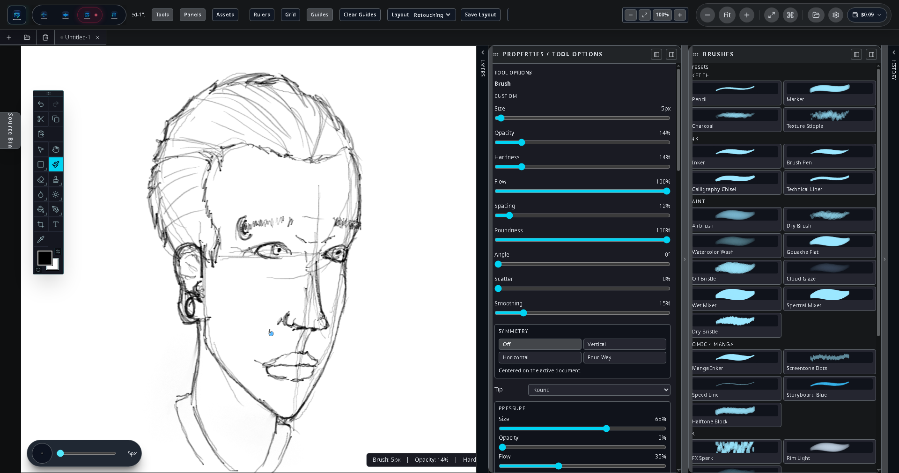

Getting started
Sloom Studio documentation
Sloom Studio is a local-first creative suite with four connected workspaces. Your projects are .sloom files that live on your device. There are no Sloom accounts, no cloud sync services, and no Sloom servers. Everything you generate or edit stays in your project unless you export it.
Bring your own keys. Sloom Studio does not include AI usage credits or a built-in model. You connect to AI providers using your own API keys. Usage is billed directly to you by each provider.
The four workspaces — Flow, Image, Paper, and Video — all open the same .sloom project and share one source library. A clip you generate in Flow is available in Image, Paper, and Video without any import step.
Sloom Studio was designed around Flow — the generative node graph is its center of gravity — but AI is deliberately optional. Each workspace is a genuine standalone tool: Image saves its own .slimg documents, Paper its own .slppr documents, and the .sloom project is the umbrella that unites all four. Use one workspace or all of them; you can build an entire project with no AI at all by importing media or creating it by hand.
Installation
-
1
Get Sloom Studio
Desktop is available now. Download the Windows installer, or the Linux AppImage or
.deb, from sloom.studio (experimental macOS builds are there too). On Android, Sloom Studio is coming to the Samsung Galaxy Store and Google Play, the trusted official way with no sideloading, and the same one-time key covers it. -
2
Install it
On desktop, run the installer on Windows, or the AppImage or
.debon Linux. It works offline, and no account with Sloom is created or required. On Android, once the stores are live you tap Install and it auto-updates like any trusted app: no "unknown sources," and no.apkto wrangle. -
3
Open Sloom Studio and, if you want AI, enter your API keys
On first launch, open the Settings panel (the gear icon in the top bar) to configure providers. Add at least one API key to enable AI generation features, or skip this step entirely; every workspace works without a key. See API keys for details.
-
4
Create or open a project
Choose New Project to create a fresh
.sloomfile, or Open to load an existing one. Projects are plain files you can keep anywhere on your device: copy them, back them up, and move them like any other file.
Android note: On Android 13 and later, Sloom Studio does not request broad storage permissions. It uses the standard file picker to access only the files you choose.
Projects and files
Every Sloom Studio project is a single .sloom file. The file contains your project graph, workspace state, layer data, page layouts, timeline arrangements, and embedded or referenced source assets.
Creating a project
From any workspace, tap the Sloom Studio icon in the top-left corner to open the project menu. Select New to create a project, or Open to load an existing .sloom file.
Saving
Sloom Studio saves your project automatically as you work. You can also trigger a manual save from the project menu. The project file is always on your device — it is never uploaded to any Sloom server.
Exporting
Each workspace has its own export options suited to its content type:
- Flow: Export generated assets individually to your source library or device gallery.
- Image: Export as PNG, JPEG, or other formats from the export panel.
- Paper: Export pages as raster images or as a print-ready PDF.
- Video: Export the assembled timeline as a video file.
File size note: Large .sloom projects can become sizable because generated images and media are embedded. If you work with high-resolution outputs, use the source library’s external-reference mode to keep the project file smaller.
Configuring API keys
Open the Settings panel from any workspace (tap the settings icon in the top bar). Each provider has its own configuration section.
| Provider | What you need | Notes |
|---|---|---|
| Google Gemini | Gemini API key from Google AI Studio | Free tier available for testing |
| Google Vertex AI | Service account JSON or API key + project ID | Enterprise; billed per-project in GCP |
| OpenAI | OpenAI API key | Also works with compatible endpoints |
| Hugging Face | HF Inference API token | Many open models available |
| Stability AI | Stability AI API key | Stable Diffusion image generation |
| Black Forest Labs | BFL API key | FLUX model family |
| Atlas Cloud | Atlas API key | Atlas generation gateway |
| ElevenLabs | ElevenLabs API key | Audio / voice generation in Flow |
Keys stay on your device — and are encrypted at rest. API keys are sealed with the operating system’s secure store on desktop (Electron safeStorage) and with WebCrypto on web and Android. They are never transmitted to Sloom, and are sent only to the provider you configured for a specific action.
Encrypted settings backup
From Settings you can export an encrypted backup of your full configuration — provider keys, preferences, and gamepad profiles — and re-import it on another machine. The backup file is encrypted with a passphrase you choose, so it is safe to store or move between devices.
Choosing a provider for a generation action
In Flow, each generation node has a Provider dropdown. Select the provider and model you want to use for that specific node. In Image, the generative fill and reference-guided generation panels have their own provider selectors. Paper and Video do not run generation directly; they consume assets produced in Flow and Image.
Flow workspace
The Flow workspace is a visual node graph editor for building AI generation pipelines. You wire together prompt nodes, model nodes, transformation nodes, and output nodes to create repeatable, cost-tracked generation chains.

Node types
- Prompt node — Text input that feeds into a generation node
- Text node — Static or parameterised text for prompts and labels
- Image generation node — Calls your chosen provider to produce an image
- Video generation node — Generates a video clip from a prompt or source image
- Audio node — Voice or sound generation via ElevenLabs or compatible
- Composition node — Combines or layers generated outputs
- Export node — Sends a result to the source library or device storage
Running a graph
Tap Run in the top bar. Flow executes nodes in dependency order. Each generation node shows its provider, model, and cost estimate before and after execution. Results appear in the node output thumbnail and are added to the source library automatically.
Cost tracking
The run summary panel shows estimated cost (in provider tokens or dollars, depending on what the provider API reports) for the current run and a cumulative total for the project session. This helps you stay aware of spending without switching to a provider dashboard.
Tip: Use the source library’s Generated Pool bin to review all outputs from a flow run and drag them directly into Image, Paper, or Video.
Image workspace
The Image workspace is a full layered image editor with AI-assisted tools including generative fill and reference-guided generation. It supports all standard layer operations plus a brush engine designed for stylus input.
Layers
The Image workspace supports raster layers, vector layers, text layers, adjustment layers, and group layers. Each layer can have masks, effects (stroke, shadow, glow), and blend modes. The layers panel is accessible from the right-side drawer on phone, or as a persistent panel on tablet and DeX.
Brush engine
The brush engine reads full stylus input: pressure (size and opacity), tilt (spread and direction), and rotation (stamp angle). Colour dynamics let you map foreground-to-background colour transitions to pressure or pen direction. A 3D tip preview shows the current brush shape before you paint.
Modifier gestures
- Shift — straight lines. Hold
Shiftwhile painting with any brush-family tool to lay a clean point-to-point straight stroke. Tap from point to point to chain connected segments. - Alt — heal / clone source.
Alt-click (or long-press the source button on touch) to set the sample point for the spot-heal and clone tools, then paint to copy or blend from that source.
Tip: On Android, the hardware volume keys can be bound to brush size, so you can resize without leaving the canvas.

Generative fill
Select a region on the canvas using any selection tool, then open the generative fill panel. Enter a description of what you want in that region and choose a provider. The result blends into the layer at the selected location.

Reference-guided generation
Drag a source image from the source library into the reference panel, then run a generation action. Models that support reference images (such as certain FLUX variants and Gemini image editing modes) will use the reference to guide style, composition, or subject identity.
Export
Open the Export panel to save the flattened composite or individual layers as PNG, JPEG, or WebP. You can also send the result to Paper or Video as a source asset without leaving the project.
Paper workspace
Paper is a page-based layout workspace designed for comics, illustrated books, webcomics, and long-form printed documents. Pages are composed of placed images, text frames, and comic-specific elements such as panels, speech bubbles, caption boxes, and SFX decals.
Page setup
Create a new page from the Paper toolbar. Set the page size, orientation, margin, and bleed settings. Pages can be standard print sizes or custom dimensions for webcomic exports.
Panel grids
Insert a panel grid onto a page to divide it into comic panels. Adjust gutter width, row and column counts, and individual panel sizes by dragging handles. Each panel is an independent frame that can contain an image from the source library or a raster paint layer.
Speech and caption tooling
Add speech bubbles, thought bubbles, caption boxes, and SFX text decals from the Insert menu. Each element has its own text, tail direction, and style settings. Speech bubbles can be linked in reading-order chains for scripting workflow.
Linked text frames
For long-form text (book chapters, article layouts), create a text frame and link it to subsequent frames on the same or following pages. Overflow text flows automatically through the chain.
Advanced typography
Paper supports OpenType true small caps, runaround text wrap with a standoff gap around obstacles, first-line and hanging indents, and drop caps from 2 up to 8 lines. These settings render on the canvas and are preserved in print export; frames that use features the vector exporter cannot yet reproduce are rasterized so the output stays faithful rather than simplified.
Japanese typesetting & manga tools
Paper supports 縦書き (vertical, right-to-left column) writing mode as a genuine layout mode, not a cosmetic flip — a frame set to vertical renders identically on the canvas and in the exported PDF, because the same layout code drives both. Switch any text frame's writing mode from the Inspector.
Furigana and emphasis marks are typed inline, using the notation letterers already use (the Aozora/pixiv/narou conventions): write 漢字《かんじ》 for furigana over a run of kanji, or add an explicit delimiter — ｜熟語《じゅくご》 — to attach a reading to any base text, including kana-led or mixed words. Wrap a word in double angle brackets, 《《強調》》, for emphasis dots (圏点/傍点). In vertical columns, one- and two-digit numbers are automatically set 縦中横 (tate-chū-yoko) — upright and horizontal — so page numbers and short digits read across the column the way novels and manga are typeset; longer numbers, like a four-digit year, stay rotated with the column.
Two manga-lettering bubble presets (Gothic and Mincho) switch a bubble's typography in one step, and a manga-digest page preset (127 × 190.5 mm — standard tankōbon trim) sits in page setup alongside the comic-book, A4, A5, and webtoon-panel sizes. Paper's preflight has a dedicated manga profile, separate from its generic, comic, and webtoon checks.
Export
For digital, export individual pages or full spreads as high-resolution PNG or JPEG, or use Webcomic mode to emit each page as a standalone web-resolution image. For print, choose PDF/X-1a or PDF/X-4: the document is rendered to real CMYK through an embedded ICC output intent, named spot-color swatches are written as real Separation plates, and text is embedded as vector curves where supported. A dedicated KDP-ready preset produces the PDF/X-1a interior or cover PDF Amazon's print checker expects, with the correct 0.125" bleed. The Print Production Inspector exposes the PDF/X target, output-intent profile, total-ink limit, black-handling policy, spot-color policy, and overprint-preview intent. You can also export a structurally valid, spec-correct Adobe IDML package for InDesign/Affinity Publisher handoff (IDML import is not yet supported). The browser PDF export remains a fast RGB proof and records production intent, but it is not press-certified.


Video workspace
The Video workspace is a timeline-based editor for assembling generated clips, Paper pages, and imported footage into finished video sequences. It supports multi-track arrangement, keyframe animation, text overlays, and export.

Timeline and tracks
Add video, audio, image, and text tracks to the timeline. Clips snap to the playhead and to each other. Resize clips by dragging their edges. Move clips by dragging. The timeline supports as many tracks as your project requires.
Keyframe animation
Select a clip, open the Properties panel, and add keyframes for opacity, scale, position, and rotation. Keyframes appear as diamonds on the timeline track. Drag to adjust timing; double-tap to edit a value.
Text and shape overlays
Insert a text track and add timed text clips. Each text clip has its own font, size, colour, and position. Use shape overlays for lower-thirds, title cards, and graphic elements that travel with the timeline.
Source bins and Paper pages
The left drawer contains source bins shared with the rest of the project. Drag generated clips or images from Flow directly onto a video track. Paper pages can be placed on a video track as still frames, making it straightforward to animate a comic sequence or slideshow.
Export
Open the Export panel when your timeline is ready. Choose resolution, frame rate, and format, then tap Export. The render happens on your device.
Shared source library
The source library is a project-wide asset manager accessible from every workspace. It holds everything you import or generate: images, clips, audio files, Paper pages, and masks.
Assets are organised into named bins. The default bins are Generated Pool (outputs from Flow), Imported Media, and Project Pages. You can create additional bins to organise your work.
To use an asset from the library in any workspace, open the left-edge drawer (phone) or the Source Library panel (tablet/DeX) and drag the asset onto the canvas, timeline, or node graph.
Tip: Assets generated in Flow appear in the source library immediately. You do not need to export and re-import them before using them in Image, Paper, or Video.
Android
Android installation and setup
Sloom Studio's desktop apps (Windows and Linux) are available now — buy once at sloom.studio. The Android build is coming to the Samsung Galaxy Store and Google Play (it isn't on either store yet) and isn't sold directly from the site; the same one-time key covers it. It runs on Android phones and tablets. For the best experience with a stylus, use an S Pen-equipped device or a tablet with Wacom-protocol stylus support.
System requirements
- Android 13 or later recommended (Android 10 minimum)
- 4 GB RAM or more recommended for large projects
- A device with a GPU that supports OpenGL ES 3.0 or later (virtually all modern devices)
Phone interface
On a phone, Sloom Studio uses an edge-drawer layout:
- Left edge — Source library (your assets and generated outputs)
- Right edge — Workspace panels (layers, properties, history, channels)
- Bottom edge — Quick asset browser
- Top bar — Workspace switcher, project actions, zoom, and settings
A floating tool palette provides quick access to the current workspace’s primary tools. Tap the × button in the top bar to hide all chrome and work full-screen; a restore button appears at the edge to bring the interface back.
Samsung DeX and external displays
When connected to an external display via HDMI or DeX Station, Sloom Studio automatically switches to a desktop-style layout with persistent side panels, a larger canvas, and full keyboard and mouse support.
Keyboard shortcuts
Standard shortcuts work in DeX mode: Ctrl+Z / Ctrl+Shift+Z for undo/redo, B for brush, S for selection, H for hand tool, Ctrl+S to save, Space to pan, and modifier keys for constrained transforms.
Mouse and pen
A Wacom-compatible pen connected via USB to the DeX dock sends full pressure and tilt data to the brush engine. Mouse scroll zooms the canvas. Right-click opens context menus.
Phone as LAN host
Sloom Studio can serve the full desktop interface from your Android phone to any browser on the same local network. This means you can open the complete Sloom Studio UI on a laptop or desktop PC browser without installing anything on the PC — your phone handles all the computation and project storage.
Starting the LAN server
-
1
Open the LAN host panel
In Sloom Studio settings, scroll to LAN Host and tap Start server. The app displays a local IP address and port, such as
http://192.168.1.42:7700. -
2
Open the address in a browser on your PC
Type the address shown on your phone into any modern browser on the same Wi-Fi network. The full Sloom Studio desktop workspace loads in the browser tab.
-
3
Work at the PC
Use your keyboard, mouse, or Wacom tablet attached to the PC. The project data lives on your phone; the browser renders the UI.
Keep your phone on the same Wi-Fi network as the PC. If your phone goes to sleep or changes networks, the connection will drop. Keep the screen awake during a LAN session.
Cross-device sync and the edit baton
The LAN host does more than mirror a screen — the phone and the desktop browser open the same live project. Changes flow both ways across the four workspaces: Flow graph edits, Paper page layouts, Image strokes and layer operations, and the shared source library all stay in step over your local network.
One editor at a time: the baton
To keep two screens from fighting over the same change, Sloom Studio uses a single edit lock — the baton. Only the device holding the baton can make changes; the other follows along as a live, read-only mirror. The phone is the project’s home and starts with the baton.
-
1
Hand off from the top bar
Tap Working here ⇄ Phone in the top bar to pass the baton to the other device. The current view is snapshotted so the receiving device picks up exactly where you left off.
-
2
The other device mirrors
Whichever device doesn’t hold the baton shows a read-only overlay and keeps updating live, so you can watch progress or review on a big screen while editing on the small one.
-
3
Presence, not lockout
When another device is viewing the same project, the top bar shows it as present — you are no longer forced to open the project “read-only.”
Handoff, not live co-editing. Sync is a baton handoff with a snapshot on switch — it is not real-time multi-cursor merging. One device edits at a time, by design, which keeps the project’s state unambiguous. The Video workspace syncs project structure; large media renders stay on the device that produced them.
Game controller support
Sloom Studio has built-in support for game controllers. Connect a standard Xbox, PlayStation, or generic gamepad over USB or Bluetooth and drive the interface with physical buttons and sticks instead of reaching across the screen. It is especially handy on Android and Samsung DeX, where a paired Bluetooth controller gives you fast, eyes-up, tactile control of the app.
Configuring bindings
Open Settings → Gamepad to view and remap every control. Bindings are organised per workspace — Flow, Image, Paper, and Video each keep their own profile, so the same button can do different things depending on where you are. Every face button, bumper, trigger, D-pad direction, stick press, and both analog sticks are mappable, and for each control you can tune the dead zone, sensitivity, analog response curve (linear, quadratic, or cubic), inversion, and trigger range. Profiles save with your settings and can be exported and imported.
Default bindings
- Flow — A opens the command palette, B deselects, X adds a source bin, Y toggles the activity trail.
- Image — the face buttons switch the brush, move, eraser, and eyedropper tools; the triggers grab the hand and paint-bucket; the bumpers undo and redo.
- Paper — the face buttons switch the select, hand, text, and image tools; the D-pad drops new text, image, caption, and speech-bubble frames onto the page.
- Video — the face buttons switch the select, hand, cut, and slip tools; the D-pad steps to the previous / next keyframe and the right trigger drops a keyframe.
- Start / Menu opens the gamepad binding editor from any workspace.
Every control is remappable per workspace in Settings → Gamepad, and your bindings save with your settings — so you can lay the controller out exactly the way you work.